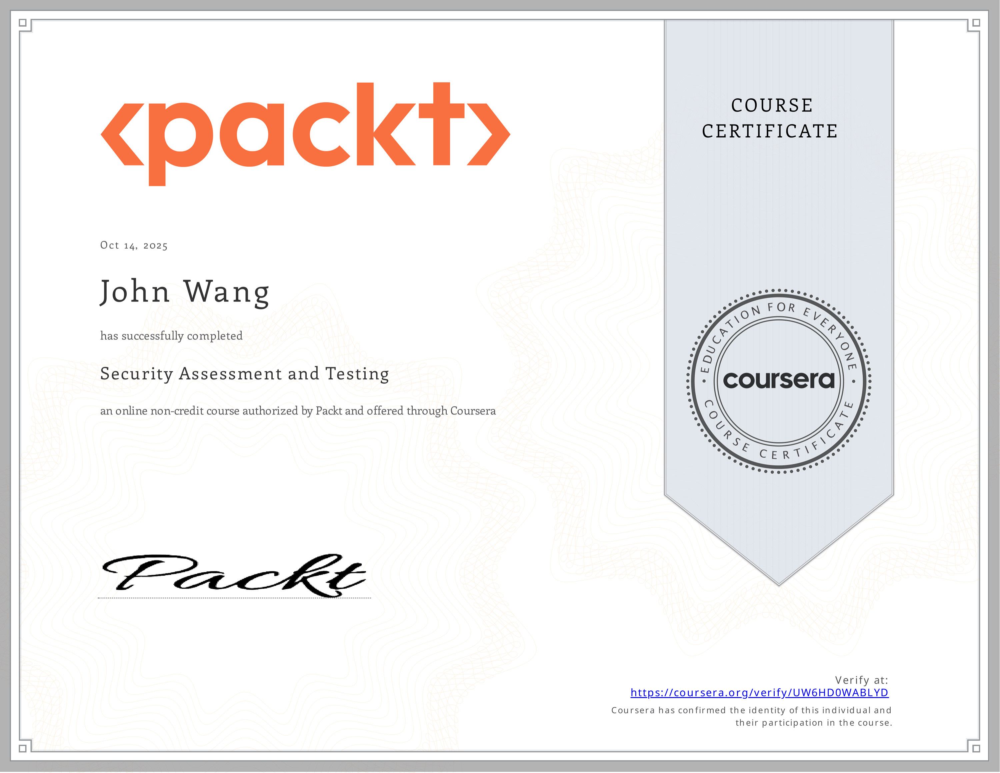
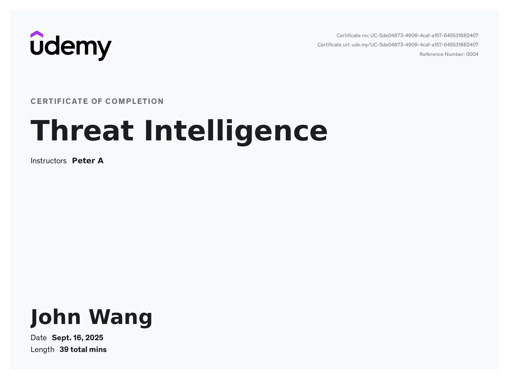
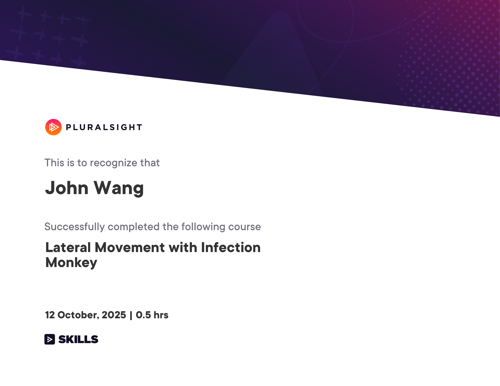
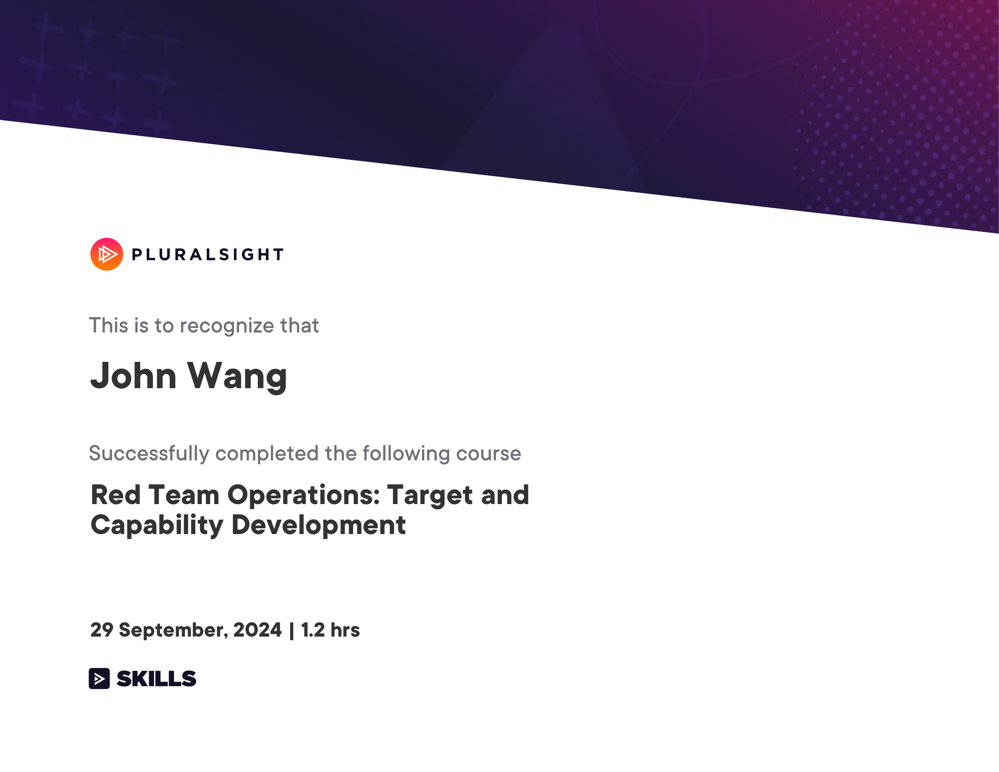
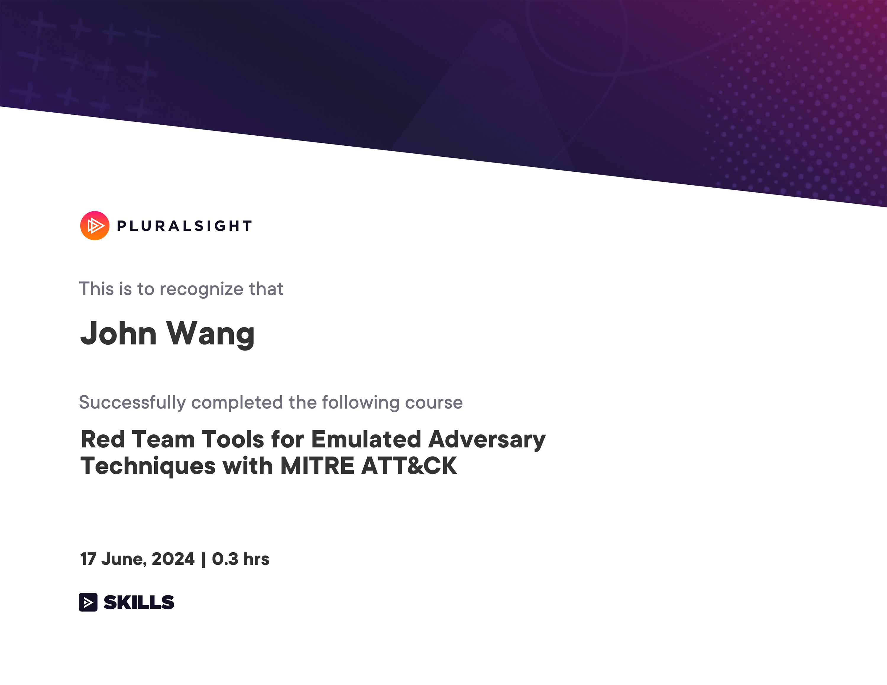
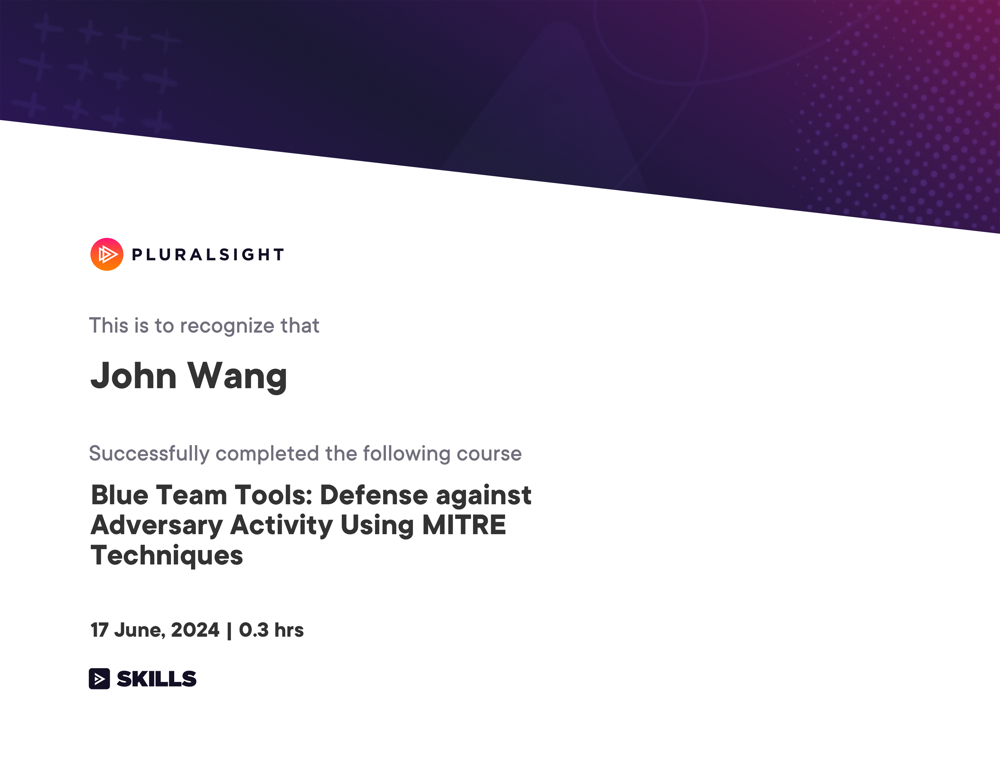

John's Security: SecOps Certificates
- Assessment and Testing
- Threat Intelligence
- Threat Simulation
- Lateral Movement with Infection Monkey from Pluralsight by Maril Vernon
- Red Team Operations: Target and Capability Development from Pluralsight by Aaron Rosenmund
- Red Team Tools for Emulated Adversary Techniques with MITRE ATT&CK from Pluralsight by Aaron Rosenmund
- Blue Team Tools: Defense against Adversary Activity Using MITRE Techniques from Pluralsight by Aaron Rosenmund
- Datadog
Assessment and Testing (1)
Security Assessment and Testing from Packt by Anthony Sequeira, Lauren Deal

Threat Intelligence (1)
Threat Intelligence from Udemy by Peter A

Threat Simulation (4)
Lateral Movement with Infection Monkey from Pluralsight by Maril Vernon

Red Team Operations: Target and Capability Development from Pluralsight by Aaron Rosenmund

Red Team Tools for Emulated Adversary Techniques with MITRE ATT&CK from Pluralsight by Aaron Rosenmund

Blue Team Tools: Defense against Adversary Activity Using MITRE Techniques from Pluralsight by Aaron Rosenmund

Datadog (1)
Detect, Prioritize, and Remediate Cloud Security Risks with Datadog CSM from Datadog